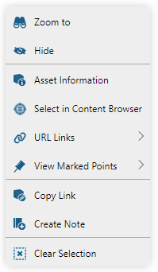
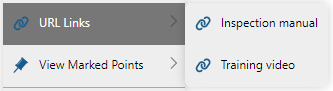
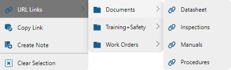

Asset Context Menu
When an asset is picked (highlighted in the viewer), you can right-click anywhere inside of the viewer area to present the asset context menu.

The asset context menu provides the following commands:
|
Zoom to the boundaries (extents) of the picked asset. |
Hide the picked asset in the viewer. A hidden asset can be re-displayed in the Hidden Assets panel. This command is not available if a Marked Point is picked. |
|
|
Display Asset Information of the picked asset. |
|
Select the current asset in the content browser. This command is not available if a Marked Point is picked. |
|
View the URL links of the picked asset's attributes. |
View the attached Marked Points of the picked asset or its descendants. The command lists the attached marked points and lets you pick one of the marked points from the list. This command is not available if a Marked Point is picked. |
|
|
Copy the picked asset URL to the clipboard. The asset inbound URL can be pasted into a knowledge view note, email or internet browser address bar. |
Add asset note. This command creates a new knowledge view note and copies the asset URL into the note. The command assigns the name of the asset to the name of the note and text of the asset URL inside the note. |
|
|
Unpick the picked asset, effectively clearing the current selection and closing the navigation popup. |


The URL Links sub-menu displays all of the currently selected asset's attributes, which are of the URL attribute type and which have a valid URL value assigned.
If there is only a single Attribute Set, which contains URL attribute values, the URL links are shown in a single list:

In case multiple Attribute Sets exist with URL attribute values, the displayed URL links will be grouped into sub-folders named after the Attribute Set:

Clicking on a URL link will open the URL in a new internet browser tab.
The URL Links list only displays valid http and https addresses. Other prefixes (file, ftp, ...) are not included. |